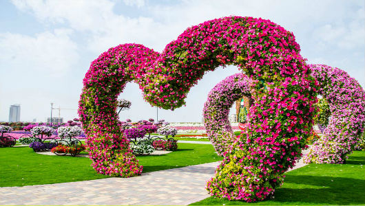
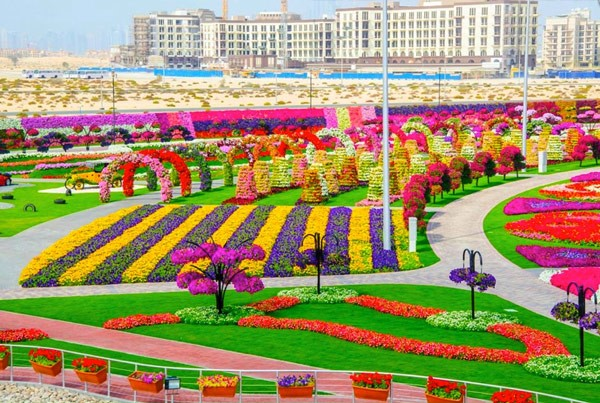
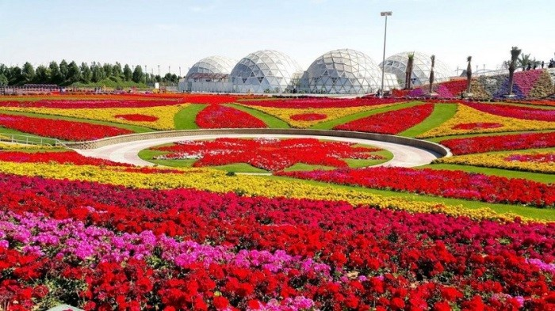

Парк цветов в Дубае (Dubai Miracle Garden)
Парк цветов — что посмотреть
Парк цветов в Дубае внесен в Книгу рекордов Гиннесса. Это одна из достопримечательностей, которую рекомендуют посетить обязательно, иначе впечатления от поездки в Дубай будут неполными.
Площадь парка около 7 гектаров. Основным видом представленных цветов являются петуньи, которые во всей своей красе проявляют себя в сухое и жаркое лето, на орошение растений ежедневно необходимо 757 000 л. воды. Во многих цветочных композициях использованы розы, тюльпаны и календула. Зона сада разбита на 7 локаций, в каждой из которых созданы уникальные ландшафтные фигуры.
Like Park
В центре локации - озеро, вокруг озера оборудованы места, где можно посидеть и расслабиться.

Hearts Passage
Пассаж сердец не является локацией в чистом виде, но это одна из самых популярных зон Dubai Miracle Garden. Создатели парка не зря сделали ставку именно на нее. После прогулки под нависающими арками в виде сердец, выполненных из различных цветов и благоухающих райскими ароматами, забыть об этом месте будет невозможно.
 Floral Park
Множество цветов создают красивые композиции
Цена билета
Для того чтобы посетить парк, нужен билет. Цена вполне приемлемая
- Дети до 2 лет - бесплатно
- Дети до 12 лет - 40 дирхам
- Лица, старше 12 лет - 50 дирхам
Правила поведения
Запрещается
- Сходить с дорожек, садиться на газоны
- Трогать и тем более срывать растения
- Вести профессиональную фото и видео съемку
Как добраться
от станции Mall of the Emirates автобус № 105, который ходит с периодичностью в 20 минут. Автобус доставит вас ко входу в сад за 15-20 минут. Стоимость проезда 5 дирхам.